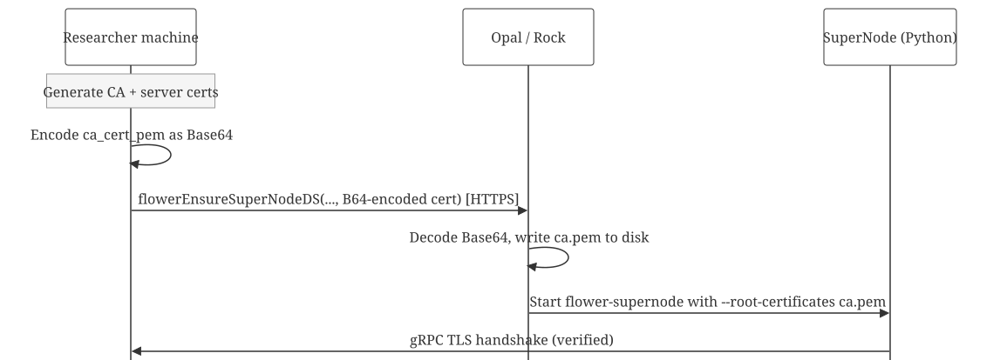

Secure Connections: TLS Auto-Certificates
secure-connections.RmdWhy TLS matters
The Flower gRPC channel between the SuperLink (your machine) and the SuperNodes (Opal/Rock servers) carries model parameters, gradients, and evaluation metrics. Without encryption, anyone on the network path could:
- Eavesdrop on gradient updates (gradient inversion attacks can leak training data)
- Redirect a SuperNode to a rogue SuperLink that sends back a poisoned model
- Tamper with gradient updates in transit, degrading model quality
The DataSHIELD/Opal control channel is already HTTPS, but the Flower
gRPC training channel is separate. By default it runs unencrypted.
Setting insecure = FALSE enables TLS.
How certificate generation works
When insecure = FALSE, dsFlowerClient auto-generates
ephemeral TLS certificates using the system openssl CLI.
Let’s see what it produces:
library(dsFlowerClient)
cert_dir <- tempfile("dsflower_certs_")
certs <- dsFlowerClient:::.generate_tls_certs(cert_dir)
cat("Generated files:\n")
#> Generated files:
for (f in list.files(cert_dir)) {
sz <- file.size(file.path(cert_dir, f))
cat(sprintf(" %-15s %d bytes\n", f, sz))
}
#> ca.key 302 bytes
#> ca.pem 444 bytes
#> ca.srl 17 bytes
#> san.cnf 95 bytes
#> server.csr 367 bytes
#> server.key 302 bytes
#> server.pem 538 bytesSeven files. Let’s look at each important one.
The CA certificate (root of trust)
ca_lines <- readLines(certs$ca_cert_path)
cat(paste(ca_lines, collapse = "\n"), "\n")
#> -----BEGIN CERTIFICATE-----
#> MIIBGzCBwgIJALucD8RsGVzXMAoGCCqGSM49BAMCMBYxFDASBgNVBAMMC2RzRmxv
#> d2VyLUNBMB4XDTI2MDMxNzE4MjgwNVoXDTI2MDMxODE4MjgwNVowFjEUMBIGA1UE
#> AwwLZHNGbG93ZXItQ0EwWTATBgcqhkjOPQIBBggqhkjOPQMBBwNCAATaQsTDlmB0
#> PFce6FrkQA9vOHPlLf/9LBpMELMbSDCaieVOK/oakzbi7qUQQr1B6ciEwv5KiLZ3
#> 6cQBnIbuHjU7MAoGCCqGSM49BAMCA0gAMEUCIHx3b/47cSxpIEPhQIfjYRdEjfLG
#> e4NWeqf/+yZoy2aVAiEAgWlTpmBPH7ey7gLgn+EDFebhisi0nKGel3PFjS7Bmz8=
#> -----END CERTIFICATE-----This CA certificate gets distributed to every Opal. The CA private
key (ca.key) never leaves your machine:
The SAN configuration
Subject Alternative Names determine which hostnames/IPs the server certificate is valid for:
cat(readLines(file.path(cert_dir, "san.cnf")), sep = "\n")
#> [v3_req]
#> subjectAltName = DNS:localhost,DNS:host.docker.internal,IP:127.0.0.1,IP:192.168.1.89| SAN | Purpose |
|---|---|
DNS:localhost |
SuperNode on the same machine |
DNS:host.docker.internal |
SuperNode inside Docker |
IP:127.0.0.1 |
Loopback connections |
IP:<LAN IP> |
SuperNode on the local network |
The server certificate
srv_lines <- readLines(certs$srv_cert_path)
cat(paste(srv_lines, collapse = "\n"), "\n")
#> -----BEGIN CERTIFICATE-----
#> MIIBYTCCAQmgAwIBAgIJAKJo/nhXfQ27MAkGByqGSM49BAEwFjEUMBIGA1UEAwwL
#> ZHNGbG93ZXItQ0EwHhcNMjYwMzE3MTgyODA1WhcNMjYwMzE4MTgyODA1WjAdMRsw
#> GQYDVQQDDBJkc0Zsb3dlci1TdXBlckxpbmswWTATBgcqhkjOPQIBBggqhkjOPQMB
#> BwNCAAT9S9cZMkADY4oZJarad4vIYQLpouu8LP9+RBcG53PF+7WL5BoXGlcGq/pB
#> 2EW18eevGtMLTVFAJg5A/+r1kwq0ozowODA2BgNVHREELzAtgglsb2NhbGhvc3SC
#> FGhvc3QuZG9ja2VyLmludGVybmFshwR/AAABhwTAqAFZMAkGByqGSM49BAEDRwAw
#> RAIgUSNcnf2vb87Oh8JUR2zo31aXolFLR/f9bDoWAXHEPygCIARtbS6jWODhI7v9
#> X58F5Fp/dbNVYWyUAyO795JnHEBE
#> -----END CERTIFICATE-----This is what the SuperLink presents during the TLS handshake. SuperNodes verify it against the CA certificate.
The generation sequence
All seven steps take roughly 5 milliseconds total (EC P-256 is fast):
1. Sys.which("openssl") → find the binary
2. ecparam -name prime256v1 → probe EC support
3. Write san.cnf → SAN configuration
4. ecparam -genkey + req -x509 → CA key + self-signed cert (1-day expiry)
5. ecparam -genkey + req + x509 → server key + CSR + sign with CA
6. Sys.chmod("ca.key", "0600") → restrict permissions
7. readLines("ca.pem") → load PEM for distributionWe use -extfile san.cnf instead of -addext
because -addext is not supported by LibreSSL (the default
on macOS).
Live demo: insecure vs TLS
Let’s connect to three real Opal servers and compare both modes.
library(DSI)
library(DSOpal)
builder <- DSI::newDSLoginBuilder()
builder$append(server = "site_a", url = "https://localhost:8443",
user = "administrator", password = "admin123",
driver = "OpalDriver",
options = "list(ssl_verifyhost=0, ssl_verifypeer=0)")
builder$append(server = "site_b", url = "https://localhost:8444",
user = "administrator", password = "admin123",
driver = "OpalDriver",
options = "list(ssl_verifyhost=0, ssl_verifypeer=0)")
builder$append(server = "site_c", url = "https://localhost:8445",
user = "administrator", password = "admin123",
driver = "OpalDriver",
options = "list(ssl_verifyhost=0, ssl_verifypeer=0)")
conns <- DSI::datashield.login(logins = builder$build(), assign = FALSE)
#>
#> Logging into the collaborating servers
cat("Connected to:", paste(names(conns), collapse = ", "), "\n")
#> Connected to: site_a, site_b, site_cInsecure mode
quiet(ds.flower.nodes.init(conns, resource = "dsflower_test.flower_node"))
quiet(ds.flower.nodes.prepare(conns, target_column = "target",
feature_columns = c("f1", "f2", "f3", "f4", "f5")))
quiet(ds.flower.superlink.start(insecure = TRUE))
Sys.sleep(2)
status_insecure <- ds.flower.superlink.status()
cat(sprintf("Insecure mode:\n"))
#> Insecure mode:
cat(sprintf(" Running: %s\n", status_insecure$running))
#> Running: TRUE
cat(sprintf(" Insecure: %s\n", status_insecure$insecure))
#> Insecure: TRUE
cat(sprintf(" TLS cert: %s\n",
ifelse(is.null(status_insecure$ca_cert_pem), "none", "present")))
#> TLS cert: none
cat(sprintf(" Federation ID: %s\n", status_insecure$federation_id))
#> Federation ID: fl-ieexombeu7fd
quiet(ds.flower.nodes.ensure(conns, symbol = "flower"))
#> Warning: site_c cannot reach SuperLink at host.docker.internal:9092
#> (There are some DataSHIELD errors, list them with datashield.errors())
#> Warning: Some nodes failed connectivity check: site_c. Consider providing
#> per-node superlink_address for those nodes.
Sys.sleep(10)
recipe <- ds.flower.recipe(
task = ds.flower.task.classification(),
model = ds.flower.model.sklearn_logreg(C = 1.0),
strategy = ds.flower.strategy.fedavg(
min_fit_clients = 3L, min_available_clients = 3L),
num_rounds = 3L,
target_column = "target",
feature_columns = c("f1", "f2", "f3", "f4", "f5")
)
cat("\nTraining (insecure, 3 sites, 3 rounds)...\n\n")
#>
#> Training (insecure, 3 sites, 3 rounds)...
run_insecure <- ds.flower.run.start(recipe, verbose = TRUE)
#> Flower App configuration warnings in '/private/var/folders/tn/qg45ss_91k375mrb66zqhx_m0000gn/T/RtmpcIYWOw/dsflower_app/sklearn_logreg/pyproject.toml':
#> - Recommended property "description" missing in [project]
#> - Recommended property "license" missing in [project]
#> 🎊 Successfully started run 1743725714196021799
#> INFO : Start `flwr-serverapp` process
#> 🎊 Successfully installed sklearn_logreg to /var/folders/tn/qg45ss_91k375mrb66zqhx_m0000gn/T/RtmpcIYWOw/dsflower_superlink/apps/dsflower.sklearn_logreg.0.1.0.9921d28d.
#> INFO : Starting Flower ServerApp, config: num_rounds=3, no round_timeout
#> INFO :
#> INFO : [INIT]
#> INFO : Requesting initial parameters from one random client
#> INFO : Received initial parameters from one random client
#> INFO : Starting evaluation of initial global parameters
#> INFO : Evaluation returned no results (`None`)
#> INFO :
#> INFO : [ROUND 1]
#> INFO : configure_fit: strategy sampled 3 clients (out of 3)
#> INFO : aggregate_fit: received 3 results and 0 failures
#> WARNING : No fit_metrics_aggregation_fn provided
#> INFO : configure_evaluate: strategy sampled 3 clients (out of 3)
#> INFO : aggregate_evaluate: received 3 results and 0 failures
#> WARNING : No evaluate_metrics_aggregation_fn provided
#> INFO :
#> INFO : [ROUND 2]
#> INFO : configure_fit: strategy sampled 3 clients (out of 3)
#> INFO : aggregate_fit: received 3 results and 0 failures
#> INFO : configure_evaluate: strategy sampled 3 clients (out of 3)
#> INFO : aggregate_evaluate: received 3 results and 0 failures
#> INFO :
#> INFO : [ROUND 3]
#> INFO : configure_fit: strategy sampled 3 clients (out of 3)
#> INFO : aggregate_fit: received 3 results and 0 failures
#> INFO : configure_evaluate: strategy sampled 3 clients (out of 3)
#> INFO : aggregate_evaluate: received 3 results and 0 failures
#> INFO :
#> INFO : [SUMMARY]
#> INFO : Run finished 3 round(s) in 51.29s
#> INFO : History (loss, distributed):
#> INFO : round 1: 0.14106420993565436
#> INFO : round 2: 0.14103147463155039
#> INFO : round 3: 0.1410312734848389
#> INFO :
#> INFO :
#> INFO : Starting logstream for run_id `1743725714196021799`
cat(sprintf("\nExit status: %s\n", run_insecure$status))
#>
#> Exit status: 0
quiet(ds.flower.nodes.cleanup(conns, symbol = "flower"))
quiet(ds.flower.superlink.stop())TLS mode
Now the same thing with encryption. Only one line changes:
insecure = FALSE.
quiet(ds.flower.nodes.init(conns, resource = "dsflower_test.flower_node"))
quiet(ds.flower.nodes.prepare(conns, target_column = "target",
feature_columns = c("f1", "f2", "f3", "f4", "f5")))
quiet(ds.flower.superlink.start(insecure = FALSE))
Sys.sleep(2)
status_tls <- ds.flower.superlink.status()
cat(sprintf("TLS mode:\n"))
#> TLS mode:
cat(sprintf(" Running: %s\n", status_tls$running))
#> Running: TRUE
cat(sprintf(" Insecure: %s\n", status_tls$insecure))
#> Insecure: FALSE
cat(sprintf(" TLS cert: %s\n",
ifelse(is.null(status_tls$ca_cert_pem), "none",
paste0(substr(status_tls$ca_cert_pem, 1, 27), "... (",
nchar(status_tls$ca_cert_pem), " chars)"))))
#> TLS cert: -----BEGIN CERTIFICATE-----... (443 chars)
cat(sprintf(" Federation ID: %s\n", status_tls$federation_id))
#> Federation ID: fl-g5fivj57qv4a
quiet(ds.flower.nodes.ensure(conns, symbol = "flower"))
#> Warning: site_c cannot reach SuperLink at host.docker.internal:9092
#> (There are some DataSHIELD errors, list them with datashield.errors())
#> Warning: Some nodes failed connectivity check: site_c. Consider providing
#> per-node superlink_address for those nodes.
Sys.sleep(10)
cat("\nTraining (TLS encrypted, 3 sites, 3 rounds)...\n\n")
#>
#> Training (TLS encrypted, 3 sites, 3 rounds)...
run_tls <- ds.flower.run.start(recipe, verbose = TRUE)
#> Flower App configuration warnings in '/private/var/folders/tn/qg45ss_91k375mrb66zqhx_m0000gn/T/RtmpcIYWOw/dsflower_app/sklearn_logreg/pyproject.toml':
#> - Recommended property "description" missing in [project]
#> - Recommended property "license" missing in [project]
#> 🎊 Successfully started run 7966990835034737904
#> INFO : Start `flwr-serverapp` process
#> 🎊 Successfully installed sklearn_logreg to /var/folders/tn/qg45ss_91k375mrb66zqhx_m0000gn/T/RtmpcIYWOw/dsflower_superlink/apps/dsflower.sklearn_logreg.0.1.0.9921d28d.
#> INFO : Starting Flower ServerApp, config: num_rounds=3, no round_timeout
#> INFO :
#> INFO : [INIT]
#> INFO : Requesting initial parameters from one random client
#> INFO : Received initial parameters from one random client
#> INFO : Starting evaluation of initial global parameters
#> INFO : Evaluation returned no results (`None`)
#> INFO :
#> INFO : [ROUND 1]
#> INFO : configure_fit: strategy sampled 3 clients (out of 3)
#> INFO : aggregate_fit: received 3 results and 0 failures
#> WARNING : No fit_metrics_aggregation_fn provided
#> INFO : configure_evaluate: strategy sampled 3 clients (out of 3)
#> INFO : aggregate_evaluate: received 3 results and 0 failures
#> WARNING : No evaluate_metrics_aggregation_fn provided
#> INFO :
#> INFO : [ROUND 2]
#> INFO : configure_fit: strategy sampled 3 clients (out of 3)
#> INFO : aggregate_fit: received 3 results and 0 failures
#> INFO : configure_evaluate: strategy sampled 3 clients (out of 3)
#> INFO : aggregate_evaluate: received 3 results and 0 failures
#> INFO :
#> INFO : [ROUND 3]
#> INFO : configure_fit: strategy sampled 3 clients (out of 3)
#> INFO : aggregate_fit: received 3 results and 0 failures
#> INFO : configure_evaluate: strategy sampled 3 clients (out of 3)
#> INFO : aggregate_evaluate: received 3 results and 0 failures
#> INFO :
#> INFO : [SUMMARY]
#> INFO : Run finished 3 round(s) in 51.26s
#> INFO : History (loss, distributed):
#> INFO : round 1: 0.14109970773484848
#> INFO : round 2: 0.14103161567624484
#> INFO : round 3: 0.14103127456124395
#> INFO :
#> INFO :
#> INFO : Starting logstream for run_id `7966990835034737904`
cat(sprintf("\nExit status: %s\n", run_tls$status))
#>
#> Exit status: 0
quiet(ds.flower.nodes.cleanup(conns, symbol = "flower"))
quiet(ds.flower.superlink.stop())The loss values are comparable. TLS is transparent to the training protocol: the only difference is that all gRPC traffic was encrypted.
How the CA cert reaches the Opals
The CA certificate travels through the DataSHIELD HTTPS channel (which is already secure). Here is the encoding chain:

Certificate lifecycle
| Event | What happens |
|---|---|
superlink.start(insecure=FALSE) |
Certs generated in temp dir (~5ms) |
nodes.ensure() |
CA public cert sent to each Opal via HTTPS |
| SuperNode connects | gRPC TLS handshake verifies server cert |
| Training runs | All gRPC traffic encrypted |
superlink.stop() |
Entire temp dir deleted (certs included) |
| 24 hours | Certs expire (safety net if stop was not called) |
Known limitations
-
No
extra_sansin the public API:.generate_tls_certs()accepts extra SANs butsuperlink.start()does not expose it yet. - No certificate renewal: certs expire after 24 hours. Very long training runs may need manually generated certificates.
- Opal method registration: reinstalling dsFlower on Rock requires re-registering methods through Opal’s admin UI.